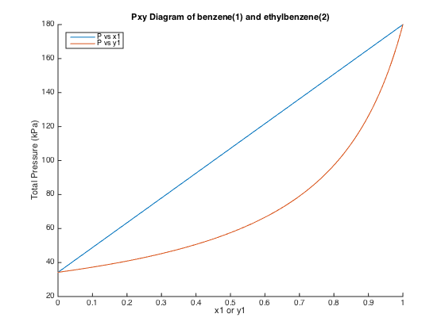
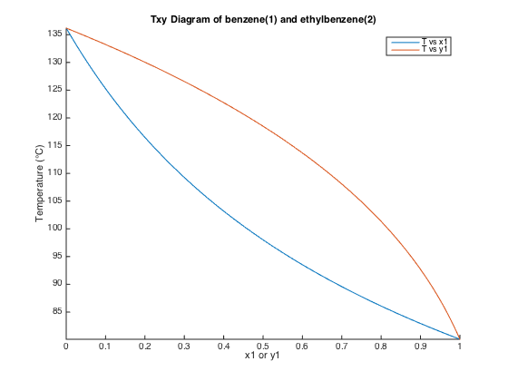

Kyle King
BIOE232 HW 11 Mar 28, 2015
Contents
Part A
clc, clear all, close all % Declare constants P1sat = 180; P2sat = 34.25; x1 = linspace(0,1,100); % Find total pressure using equation 1 P = x1.*[P1sat - P2sat] + P2sat; figure, hold all, plot(x1, P) % Solve for y1: y1 = (x1./P).*P1sat; plot(y1, P) % Add some labels title('Pxy Diagram of benzene(1) and ethylbenzene(2)') legend('P vs x1', 'P vs y1','location', 'northwest') xlabel('x1 or y1'), ylabel('Total Pressure (kPa)')
Part B
clear all % Declare constants P = 101.3; % kPa T1sat = 80.09; T2sat = 136.185; T = linspace(T1sat, T2sat, 100); % Find saturated pressures based off of Temperature scale P1sat = exp(13.8858 - 2788.51./( T+220.79 )); P2sat = exp(14.0045 - 3279.47./( T+213.2 )); % Find partial content x1 = (P-P2sat)./(P1sat - P2sat); y1 = (x1.*P1sat)/P; % Plot figure, hold all, plot(x1, T) plot(y1, T), axis tight % Add some labels title('Txy Diagram of benzene(1) and ethylbenzene(2)') legend('T vs x1', 'T vs y1','location', 'northeast') xlabel('x1 or y1'), ylabel('Temperature (°C)')